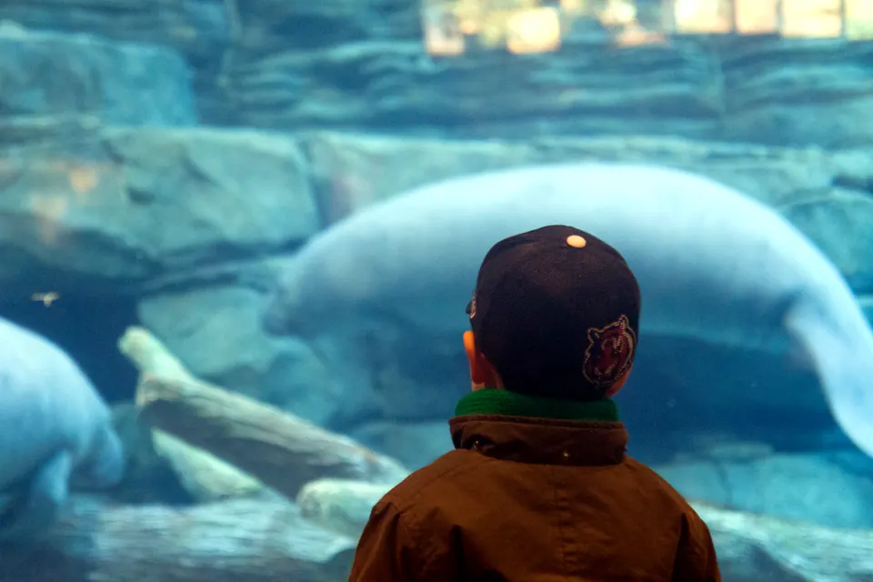
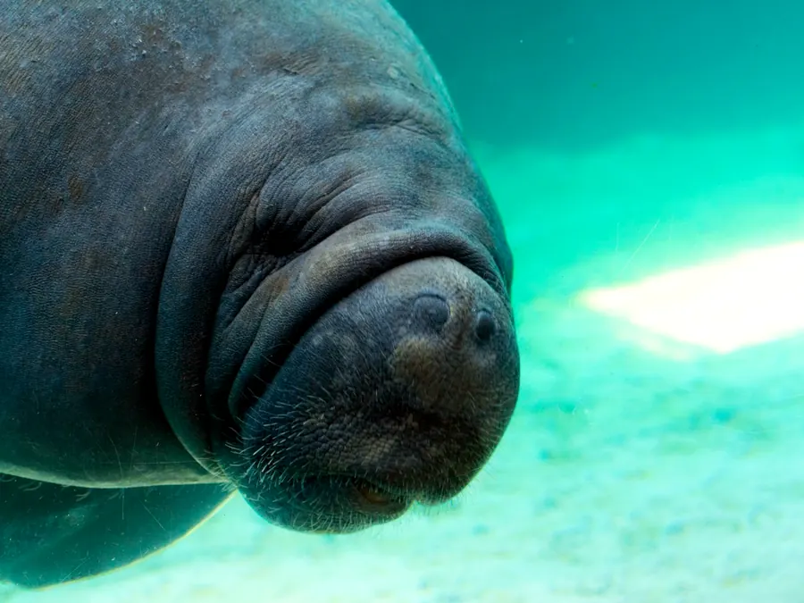
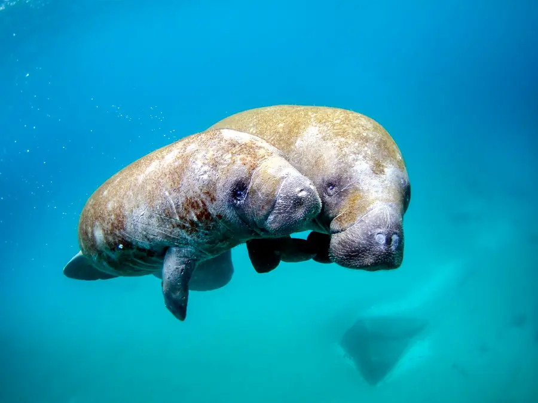
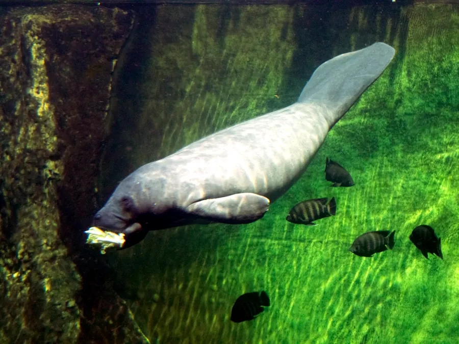
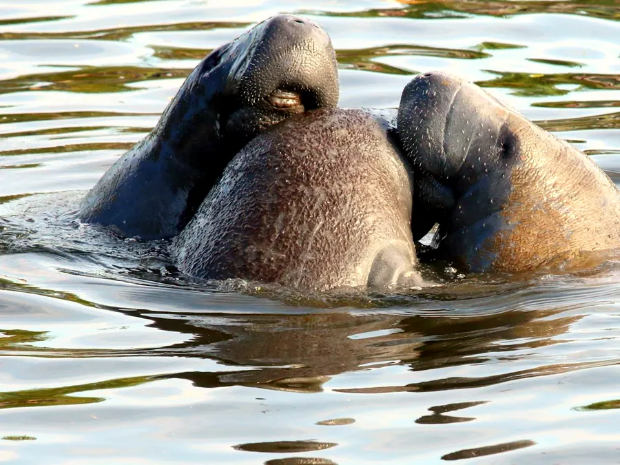

Florida manatee facts, threats and how rescue works
Manatees are slow, plant-eating giants that share Florida's waters with boats and people. Here is what they need, what hurts them, and how rescue teams nurse injured manatees back to health.

Why manatees are Abby's favorite animal
Manatees are my favorite animal, and they are a big part of why I started Beyond the Glass.
Most people fall for their round faces and soft, wrinkly snouts first. I did too. What I love most, though, is how gentle they are. An adult can weigh about 1,000 pounds, and still nothing around a manatee has any reason to be afraid of it.
Manatees only eat plants. They never hunt anything, so a normal day is slow meals of seagrass and long, quiet rests. I find that so peaceful to watch.
I like to imagine people carrying themselves the way manatees do: unhurried, patient and harmless to whoever is nearby. Everyday life would be a lot softer. That thought is part of what pulled me into learning about the aquariums and zoos that rescue them.


Manatee facts: species, size, diet and lifespan
The West Indian manatee lives in U.S. waters as two subspecies: the Florida manatee and the Antillean manatee, whose range includes Puerto Rico. Adults are typically 9 to 10 feet long and weigh around 1,000 pounds, and some grow past 13 feet and 3,500 pounds. A newborn calf weighs about 60 to 70 pounds.
Manatees are herbivores. They spend up to eight hours a day grazing on seagrass and other plants, eating up to 10% of their body weight daily. Together with their closest living relative, the dugong, they form the order Sirenia, the only marine mammals that eat plants.
Of the wild manatees that reach adulthood, only about half are expected to survive into their early 20s. In human care, a manatee may live over 65 years.
Sources: Florida Fish and Wildlife Conservation Commission, Aquatic Mammals: Manatee; U.S. Fish and Wildlife Service, Manatee (Trichechus manatus); U.S. Geological Survey, Florida Manatees (1995).
- 8,350+manatees estimated to live in Florida
- 8 hoursa day spent grazing on seagrass and other plants
- 65+ yearsthe lifespan a manatee may reach in human care
What threatens Florida manatees
In 2017 the U.S. Fish and Wildlife Service moved the West Indian manatee from endangered to threatened under the Endangered Species Act, with its federal protections kept in place. In January 2025 the agency proposed listing the Florida manatee as threatened and the Antillean manatee as endangered. Manatees still face four big dangers.
98
Boat strikes
Collisions with watercraft caused 25% of deaths among the manatees examined in 2025, 98 cases in all. That same year FWC and its partners rescued 33 manatees with boat injuries, the most on record.
33
Cold stress
Losing warm water habitat is one of the main threats to manatees. In the colder winter of 2025, cold stress disease was diagnosed in 33 of the manatees examined.
50
Red tide
Harmful algal blooms are another threat. In 2025, 50 manatee deaths were attributed to a red tide bloom in southwest Florida during the winter.
1,255
Seagrass loss and starvation
When seagrass died off in the Indian River Lagoon, manatees on Florida's Atlantic coast starved. From December 2020 to April 2022, 1,255 manatee carcasses were documented during the event, and 2021 set a statewide record of 1,100 deaths. The event was officially closed on March 14, 2025.
Sources: Florida Fish and Wildlife Conservation Commission, 2025 Manatee Mortality in Review, Manatee Mortality Table by County (2021) and Closed Manatee Mortality Event Along the East Coast; U.S. Fish and Wildlife Service, 2017 reclassification and 2025 petition finding.
How manatee rescue and rehabilitation works
Florida manatees are rescued through the Manatee Rescue & Rehabilitation Partnership, a cooperative of agencies, organizations and aquariums established in late 2001 to rescue, rehabilitate and release manatees. It now includes more than 20 organizations. FWC and its partners rescued 116 manatees in 2024 and 119 in 2025 (preliminary).
Sources: U.S. Fish and Wildlife Service, It Takes a Village to Save Manatees (2023); Manatee Rescue & Rehabilitation Partnership, FAQs; Florida Fish and Wildlife Conservation Commission, Manatee Rescue Statistics.

-
Rescue
Someone reports an injured, orphaned, cold-stressed or tangled manatee, and FWC and partner teams bring it in from the water.
-
Critical care
The manatee goes straight to a federally authorized critical care facility. In Florida these include ZooTampa at Lowry Park, SeaWorld Orlando and Jacksonville Zoo and Gardens.
-
Second-stage care and release
Once critical care is no longer needed, a manatee may move to a second-stage facility, such as the zoos in Columbus and Cincinnati, until it is ready to return to Florida waters.
Aquariums and zoos in the directory that help manatees
Each of these institutions rescues, treats or houses recovering manatees. Open one to see its full program.
- SeaWorld OrlandoOrlando, Florida
- Mote Marine Laboratory & AquariumSarasota, Florida
- Georgia AquariumAtlanta, Georgia
- Columbus Zoo and AquariumPowell, Ohio
- Cincinnati Zoo & Botanical GardenCincinnati, Ohio
- Texas State AquariumCorpus Christi, Texas
- Audubon AquariumNew Orleans, Louisiana
- National AquariumBaltimore, Maryland

How you can help manatees in three steps
Boats and people share the water with manatees every day. A few habits on and near the water make a real difference.
-
Slow down in manatee zones
Florida has regulatory speed zones to protect manatees. Obey every posted waterway sign, and wear polarized sunglasses, since glare on the water hides manatees.
-
Look, but never touch or feed
Do not touch manatees, feed them or give them water. Manatees that grow used to people can lose their natural fear of boats and humans, which puts them in danger.
-
Report a manatee in trouble
Call FWC's Wildlife Alert Hotline at 888-404-3922 (or *FWC or #FWC from a cell phone) for any injured, orphaned, tangled, distressed or dead manatee. Early calls start the rescue.
Source: Florida Fish and Wildlife Conservation Commission, Florida Manatee: How to Help, Viewing Guidelines and Living with Florida Manatees.
See every aquarium that rescues marine animals
16 AZA-accredited aquariums and zoos, from sea turtle hospitals to manatee and sea otter rescue, grouped by region.
Sources
- U.S. Fish and Wildlife Service. Manatee (Trichechus manatus). fws.gov.
- Florida Fish and Wildlife Conservation Commission. Aquatic Mammals: Manatee. myfwc.com.
- U.S. Geological Survey. Florida Manatees (Lefebvre and O'Shea). usgs.gov, 1995.
- U.S. Fish and Wildlife Service. Manatee Reclassified from Endangered to Threatened as Habitat Improves and Population Expands. fws.gov, March 30, 2017.
- U.S. Fish and Wildlife Service. U.S. Fish and Wildlife Service Publishes Finding on Two West Indian Manatee Petitions. fws.gov, January 13, 2025.
- Florida Fish and Wildlife Conservation Commission. 2025 Manatee Mortality in Review. myfwc.com.
- Florida Fish and Wildlife Conservation Commission. Manatee Mortality Table by County, 2021 Final. myfwc.com.
- Florida Fish and Wildlife Conservation Commission. Closed Manatee Mortality Event Along the East Coast. myfwc.com.
- U.S. Fish and Wildlife Service. It Takes a Village to Save Manatees. fws.gov, May 15, 2023.
- Manatee Rescue & Rehabilitation Partnership. FAQs. manateerescue.org.
- Florida Fish and Wildlife Conservation Commission. Manatee Rescue Statistics (2024 and 2025 preliminary rescue summaries). myfwc.com.
- Florida Fish and Wildlife Conservation Commission. Florida Manatee: How to Help; Viewing Guidelines; Living with Florida Manatees. myfwc.com.
Top photo: “Benjamin Watches Manatees” by Eugene Kim, CC BY 2.0, cropped and color-graded. Other photos: Unsplash.